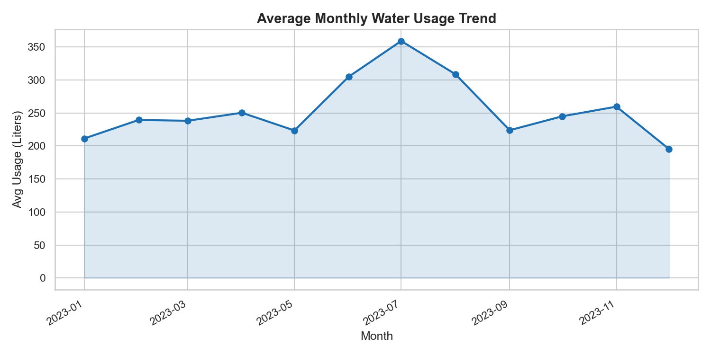
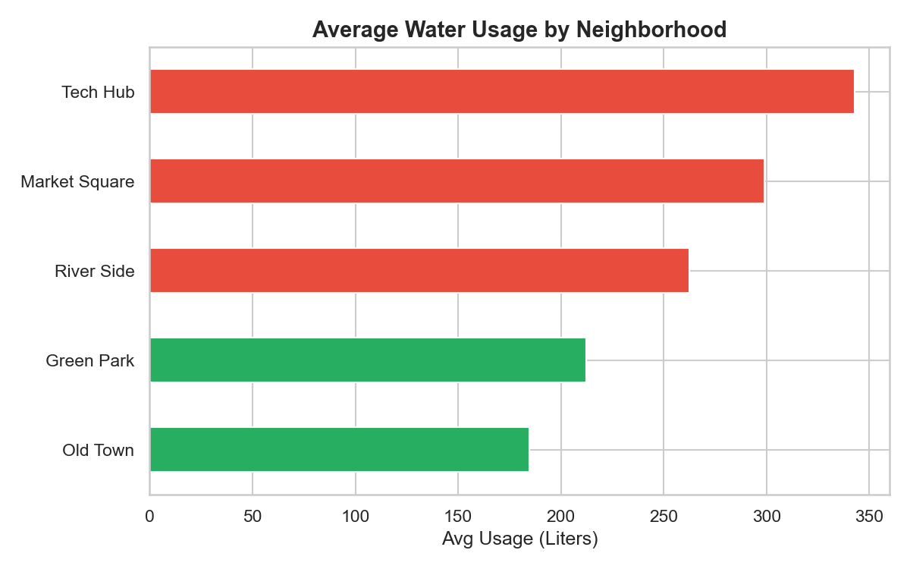
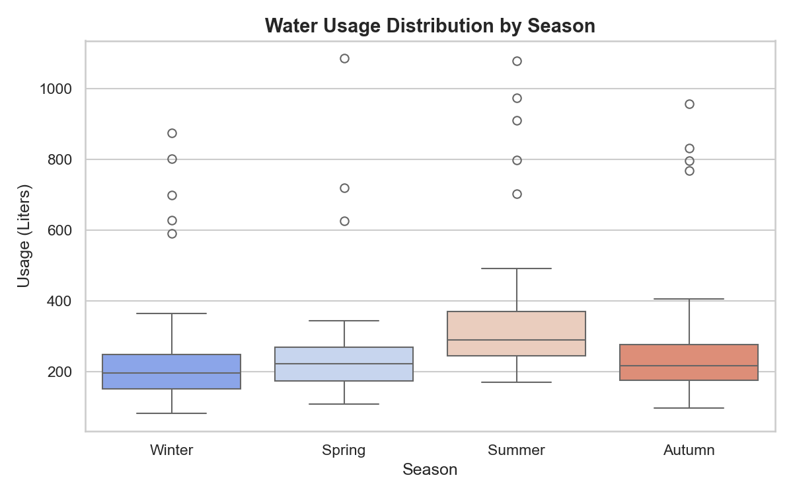
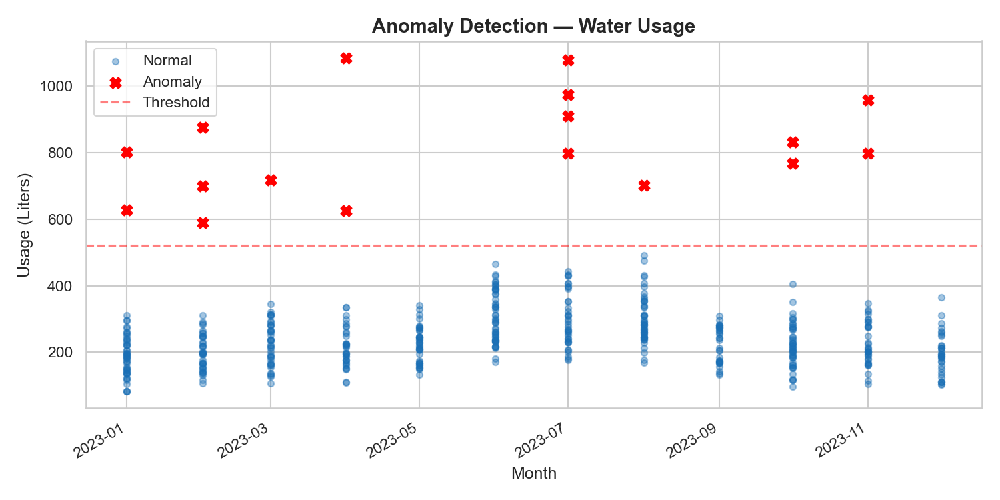
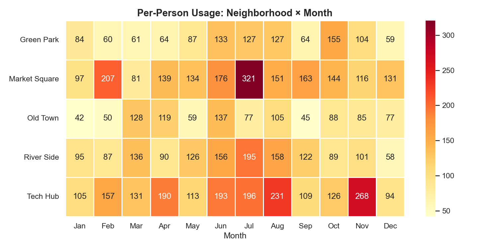
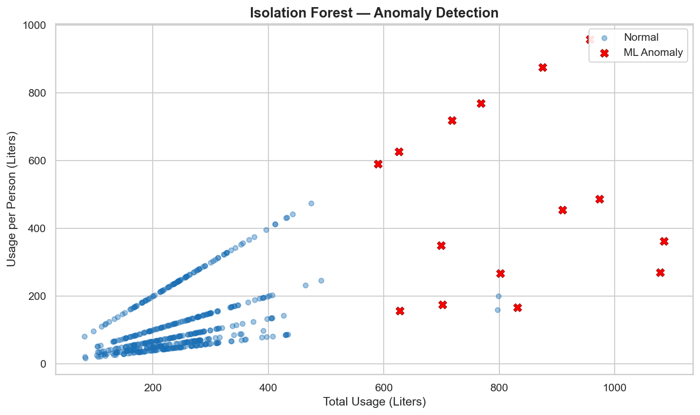
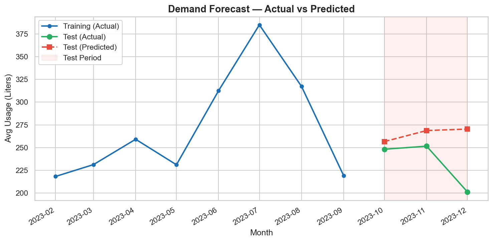
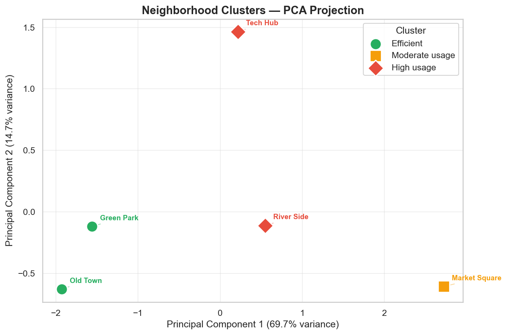

Uncovering consumption patterns, seasonal demand trends, and anomalies across 500 households in 5 neighborhoods to drive smarter conservation strategies.
Municipal corporations collect household water consumption data but lack visibility into usage inefficiencies. This analysis identifies abnormal consumption patterns, high-usage neighborhoods, and seasonal demand trends to inform conservation strategies.
Five comprehensive visualizations revealing water usage patterns, neighborhood comparisons, seasonal effects, anomalies, and per-person efficiency.
Average water consumption across all households per month. The chart clearly shows a peak during summer months (June-August), driven by increased outdoor and cooling usage.

Tech Hub and Market Square consume significantly more water on average. Green Park and Old Town are the most efficient neighborhoods.

Summer usage is both higher and more variable. The wider spread indicates inconsistent behavior across households.

Red markers indicate abnormally high usage (beyond mean + 2 std). These likely indicate leaks, meter faults, or unreported commercial use.

Per-person monthly usage across all neighborhood-month combinations. Darker cells are priority targets for conservation outreach.

Core insights extracted from the data, highlighting the most impactful patterns and areas requiring immediate attention.
Average usage is ~40% above the city-wide mean. Likely driven by larger household sizes and potential commercial mixing in residential data.
June, July, and August consistently show the highest demand. Conservation campaigns are most impactful if launched in May before the spike.
Around 18 records show consumption 2-4x the normal range. These should be physically inspected for leaks or meter malfunctions.
When normalised by household size, some "low-total" neighborhoods actually have higher per-person usage, masking inefficiency.
Building on Phase 1's exploratory analysis, we applied three machine learning techniques to uncover deeper patterns: Isolation Forest for anomaly detection, Random Forest Regression for demand forecasting, and KMeans Clustering for grouping neighborhoods by usage behavior.
Unsupervised Isolation Forest model identifies anomalous water usage by analyzing total consumption, rolling averages, neighborhood deviations, and per-person ratios. Red markers represent ML-flagged anomalies.

Random Forest Regressor trained on lag features, seasonal encoding, and household size. The shaded region shows the 3-month test period with predicted vs actual values.

KMeans clustering with PCA-reduced visualization groups neighborhoods into three behavior profiles: High usage, Moderate usage, and Efficient.

05_forecast.py.
06_cluster.py.
Actionable strategies derived from the data to reduce wastage, optimize billing, and improve water infrastructure.
Prioritize physical inspections in Tech Hub and for all 18 flagged anomaly households to identify water leaks early.
Launch water-saving awareness drives in April-May before demand peaks in June for maximum conservation impact.
Introduce progressive billing. Households using above 250 L/month pay a higher rate to incentivize savings.
Install smart meters in the top 20% highest-usage households for live anomaly detection and alerts.